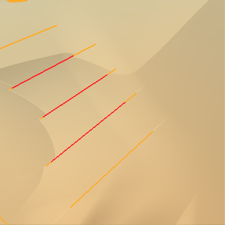
You picked option 2: the tie term counts only for a pass that already stands out by more than 0.1 m. A pass that has
just appeared at a fold now starts at weight 0 instead of arriving whole as a step. It is built on branch
land/bug-171 (three lines in src/road.js). I measured it with the junction-dirt census on the
same 9 random seeds, within 1000 m of the origin, 5 cm moves.
A site is a place where the physics ground jumps by 2 cm or more inside a 0.5 mm move. A ramp is not a jump: it is a 5 cm move that rises more than 8 cm.
| class | sites before | sites after | > 0.15 m before | > 0.15 m after | worst before | worst after |
|---|---|---|---|---|---|---|
| rival pass appears (rivalSet) | 16 | 3 | 8 | 2 | 2.00 m | 1.55 m |
| leg limb born or dies | 14 | 2 | 12 | 2 | — | — |
| leg limb hops along its leg | 579 | 582 | 168 | 170 | 1.46 m | 1.46 m |
| all step classes | 926 | 909 | 218 | 205 | 2.00 m | 1.55 m |
| ramps (per 5 cm) | 1255 | 1260 | 101 | 109 | 1.37 m | 1.37 m |
Option 2 did what it promised. The two classes it targets, a rival pass or a limb being born at a fold, went from 30 sites to 5. But those were never most of the problem.
Some steps became ramps, and the ramps are steep. Four new ramp sites appeared where a step used to be. The worst two rise 0.86 m and 0.76 m in a 5 cm move: slopes of about 17:1 and 15:1. They replaced steps of 1.82 m and 0.82 m. To a tyre that is still a wall.
582 of the remaining sites are one leg limb whose foot hops 1–4 m along its own leg, with no limb born or lost. I probed the worst one (seed 407711925, 1.46 m). The foot jumps from 949.3 m to 945.8 m along the leg. The distances on the two sides are 14.511 m and 14.512 m: one millimetre apart.
The cause is geometry. A road centreline is stored as a polyline, a chain of straight segments about 3.5 m long. When the query point sits on the inside of a bend, near its centre of curvature, the leg is almost the same distance away all round it. Each straight segment then has its own nearest point, and the code keeps only the nearest of them. As the query crosses the line where two neighbouring segments are equally near, the chosen foot jumps by about a segment length. The carve takes its height from the foot, so the ground steps by the leg's climb over that jump.
Those lines are rays from the bend's centre through each polyline corner. You can see them in the pictures below as a red fan (sites A and D) or, where the bend's centre is off the picture, as parallel red lines (site E). The tie term never touches this, so option 2 cannot fix it.
Each site has two pairs, before on the left, after on the right. The top pair is the game, same camera both times. The bottom pair is the physics ground itself: a 16 m square around the site, north up, one pixel per 5 cm, lit from the north-west. Red marks a jump over 0.15 m between neighbouring pixels. Amber marks one over 0.05 m (steeper than 1:1). Blue on the after picture marks ground that moved by more than 2 cm.
The game pictures barely change, and they cannot show these steps. The visible terrain mesh has vertices about a metre apart, so a step inside 5 cm draws as a smooth slope or a crease. The wheel samples the physics ground directly, so it feels the step. The ground pictures are the honest view.
Before: a 2.00 m rival-pass step and a 1.46 m limb hop, a few metres apart. After: the 2.00 m step is gone; the limb hops (the red fan) are unchanged.
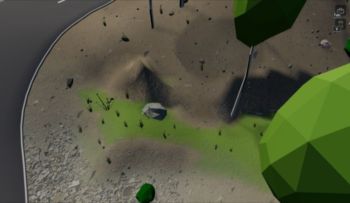
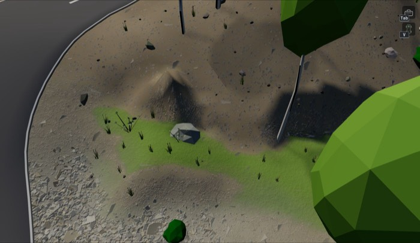
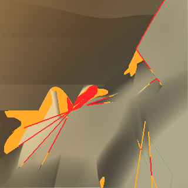
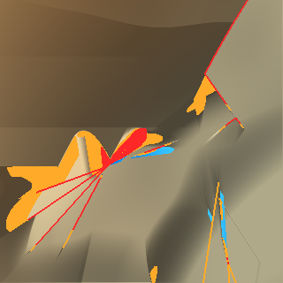
Before: a 1.82 m rival-pass step. After: it is a ramp of 0.86 m per 5 cm, still a wall to a tyre. The 1.15 m limb hop beside it is unchanged.
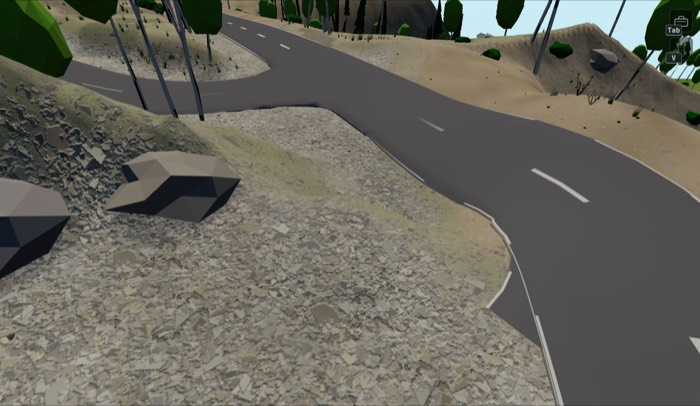
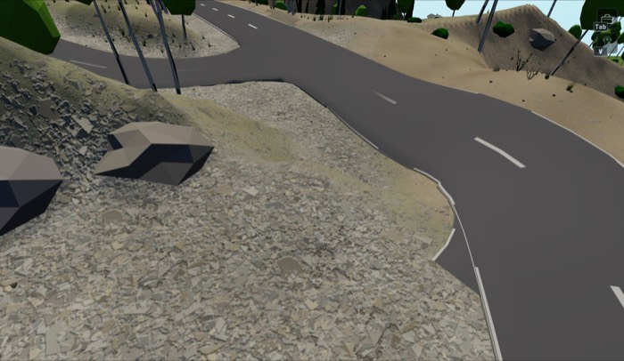
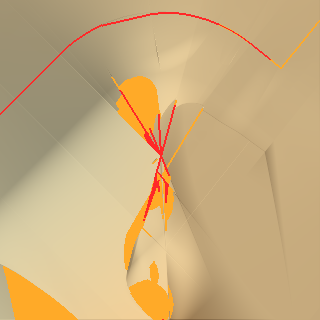
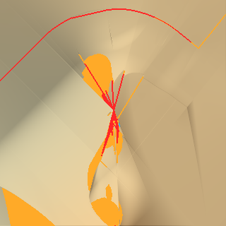
Before: a 0.82 m step where a limb was born. After: a ramp of 0.76 m per 5 cm in the same place. The step became a ramp, but barely less steep.
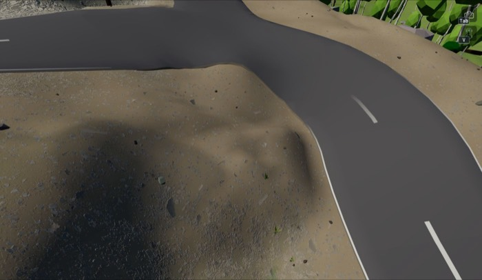
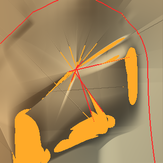
Before: born-limb steps of 0.75 m and 0.60 m. After: a ramp of 0.23 m per 5 cm. The star of red rays around the bend's centre is the hop class and stays.
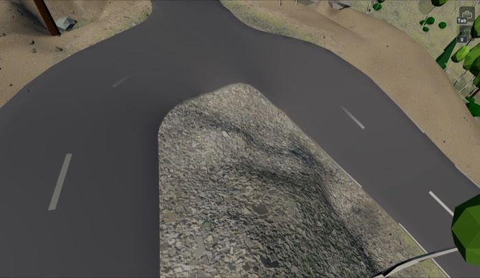
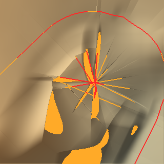
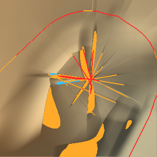
A 0.25 m limb hop: the median of the sites over 0.15 m. Unchanged. The parallel red lines are the same rays, from a bend whose centre is off the picture.
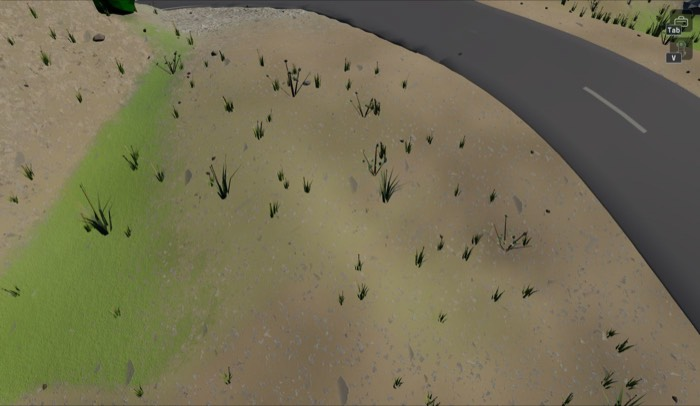

Option 3, the smooth minimum, fixes the hop class by construction. It stops picking one nearest point and instead blends every point of the leg by how near it is, so a foot cannot jump. Near a bend's centre it averages the leg's height all round the bend, which is the honest answer there. It also replaces the tie term and the prominence gate, so option 2 would be removed by it. Cost: more distance samples per ground query near junctions, measured with the power bench before landing.
A narrower alternative exists. Each limb's foot could be projected onto the smooth centreline curve instead of the polyline (the road resolver already does this for the main road it stands on). The rays would go away. One point would stay: the bend's exact centre, where every point of the curve is equally near, and the foot would swing round fast there, a steep ramp over a few centimetres.
My recommendation: keep option 2 for now (it removes the 2.00 m and 1.82 m steps, adds no new step, and costs nothing), and build option 3 next.